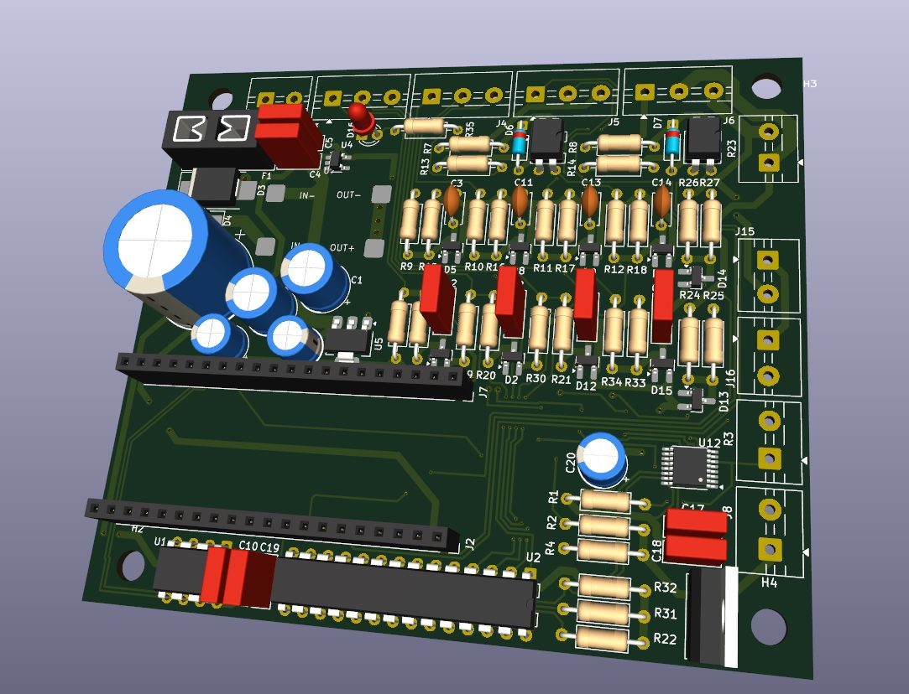

Index / Item 5
K1500
digital dash
To be writtenDash: what it is and why you built it (two sentences).
- Part
- Digital gauge cluster, 1998 K1500 Suburban
- Main
- ESP32-P4
- Wireless
- ESP32-C6
- Display
- 1024 × 600 IPS
- Status
- On the bench
Exploded view
Scroll to take it apart. Tap a part to jump to it.
Specifications
- Vehicle
- 1998 K1500 Suburban
- Main controller
- ESP32-P4
- Wireless
- ESP32-C6, for OTA updates and a config and calibration web page
- Interface
- Custom interface board
- Display
- 1024 × 600 IPS, LVGL 9, RGB565
- Controls
- Physical buttons
- UI
- Shane's own design, with day and night variants
- Firmware
- Split into a data layer and a UI layer, so gauge layouts can be swapped from a compiled-in registry
Status
- Simulator
- Working. The interface was prototyped as HTML/CSS/JS simulators first.
- Hardware
- Architecture defined
- First milestone
- Running on the bench with simulated data
- In the truck
- Not yet
How it got built
To be writtenWhy a custom dash for the Suburban, and how the gauge layouts were designed.

Replacement cluster board, 3D renderDay layout screenshotNight layout screenshotBench setup